Three Turns
FoundationOne foot, on a curve, turning 180° — front to back or back to front. It changes edge and direction, never feet, and the print it leaves looks like the numeral 3, its cusp pointing into the circle.
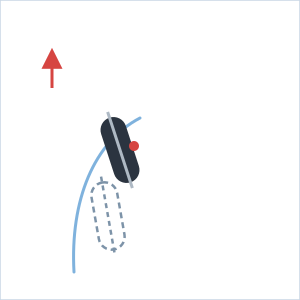
1 · Entry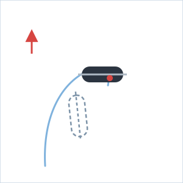
2 · The turn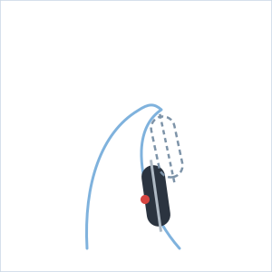
3 · Exit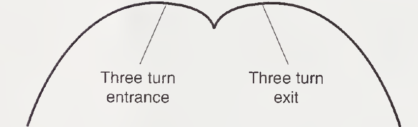
The four variants
- Forward outside → back inside
- Forward inside → back outside
- Back outside → forward inside
- Back inside → forward outside
Rotate the arms and upper body over the skating foot, then check — stop the rotation dead at the top of the turn or the exit edge spins away. Skating knee bent on entry, rises through the turn, bent again on exit. Head turns with the body into the new direction.
The free foot stays over the print the whole way — behind the skating foot (to the heel) for forward threes, in front for back threes.
Balance starts just back of centre on a forward edge and rocks forward to just behind the first toe pick at the turn — never onto the pick. On back threes it starts just forward of centre and rocks back.
Tips
- Learn it in this order: at the barrier → two-footed on a circle → one foot. A forward outside three (RFO → RBI) is the classic first one.
- For the back inside three, think “sweep the rainbow” with the free foot.
Double Threes
IntermediateTwo three turns linked on the same foot with no step down in between: forward → back → forward again — e.g. an RFO three to RBI, straight into a second three back to RFO.
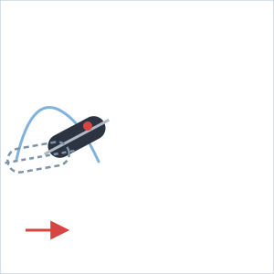
1 · Entry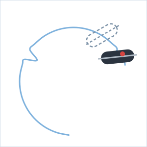
2 · The turn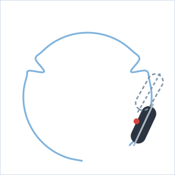
3 · Exit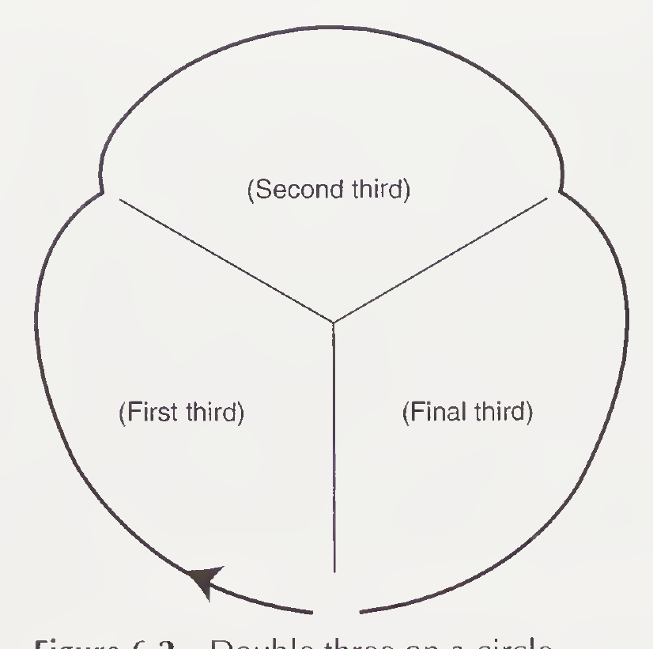
Everything from the three turn, plus discipline: the whole skill is checking the exit of the first turn before you allow the second rotation to start. Rushed doubles wobble; checked doubles flow.
One foot throughout; the free foot never touches down and stays over the print.
The edge flips with each turn — outside → inside → outside (or the reverse) — balance rocking to the front of the blade at each cusp.
Tips
- On a circle, the two turns sit in equal thirds — start at 6 o’clock, turn at 10 and at 2, cusps pointing at the centre like a Y. If the rotation won’t behave, practise on two feet, or on a straight line, before going back to the circle.
- Drop three (dance term): a forward outside three with an instant step — the feet come together at the point of the three without the free foot touching down, both knees bend, and the new foot pushes off onto a back outside edge.
Inside Open Mohawk
Beginner–IntermediateThe most common turn in skating — the everyday way to go from forward to backward. A two-foot turn: it changes feet and direction, not edge (right forward inside → left back inside). “Open” because the free foot is placed heel-to-instep and the hips finish open, free foot behind.
 1 · Entry
1 · Entry
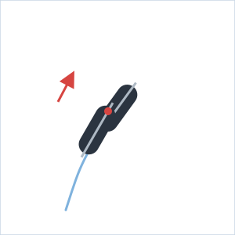
2 · The turn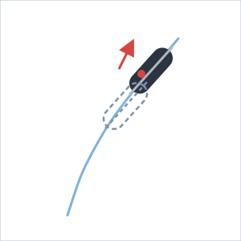
3 · Exit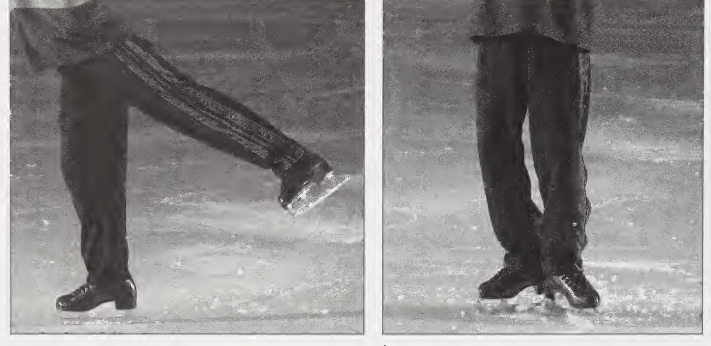
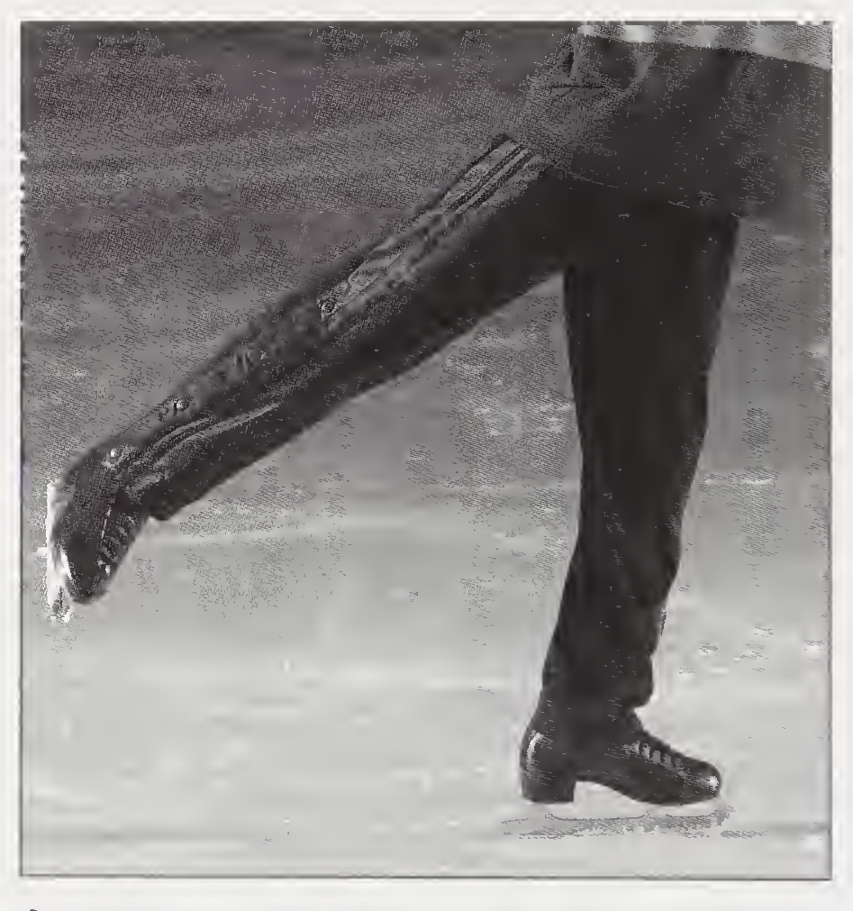
Shoulders rotate into the turn, then check; step down onto a bent knee. Hips stay open — at the exit the new free foot is behind you.
The free foot starts behind the skating foot; bring its heel to the instep of the skating foot, then step down toward the ball of the foot.
Inside edge before, inside edge after — only the foot and the direction change.
Tips
- Practise the placement standing at the barrier (heel-to-heel stepping). A spread-eagle two-foot step teaches your hips the open position.
Inside Closed Mohawk
IntermediateThe same turn as the inside open Mohawk with one change: the placement. “Closed” — instep-to-heel, hips closed, free foot finishing in front.
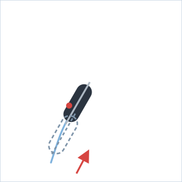
1 · Entry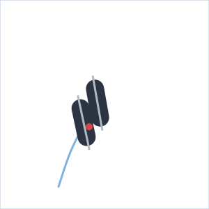
2 · The turn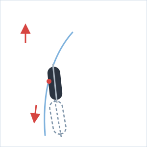
3 · Exit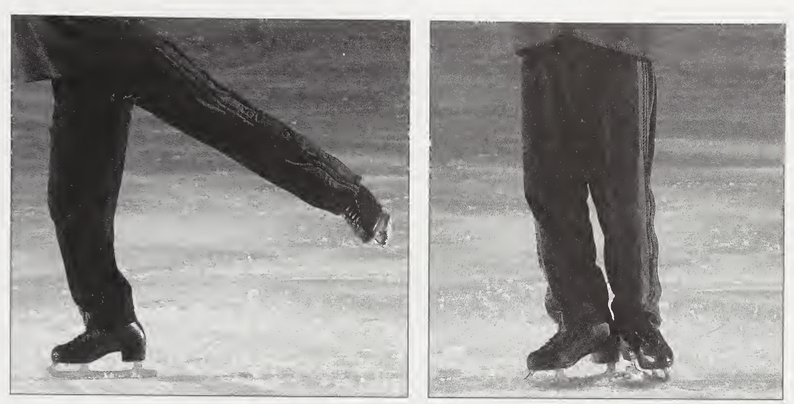
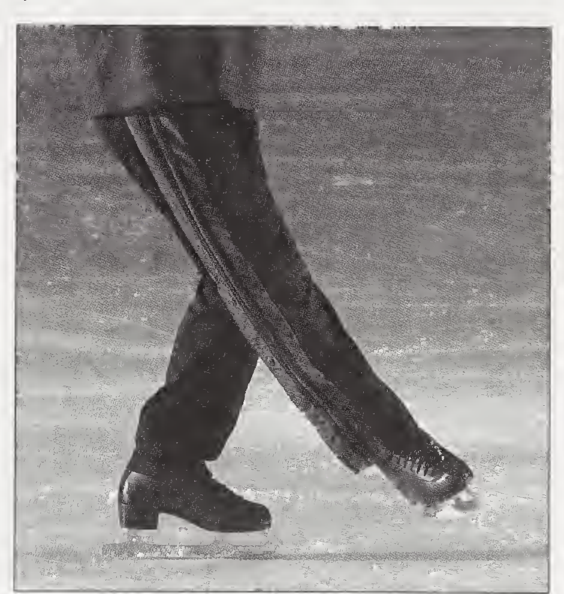
Same rotation and check as the open Mohawk; the difference is where the new foot lands and the closed hip at the finish.
Place the instep of the free foot to the heel of the skating foot. After the step, the original skating foot keeps gliding forward — it finishes in front of you, not behind.
Inside edge throughout, on both feet.
Tips
- If your free foot keeps ending up behind, you’re doing the open one — check the placement: heel-to-instep = open, instep-to-heel = closed.
Outside Open Mohawk
IntermediateThe open Mohawk on the outside edge: right forward outside → left back outside — the same step as the inside open Mohawk, on the other edge (the keyframes below are the same strip).
1 · Entry
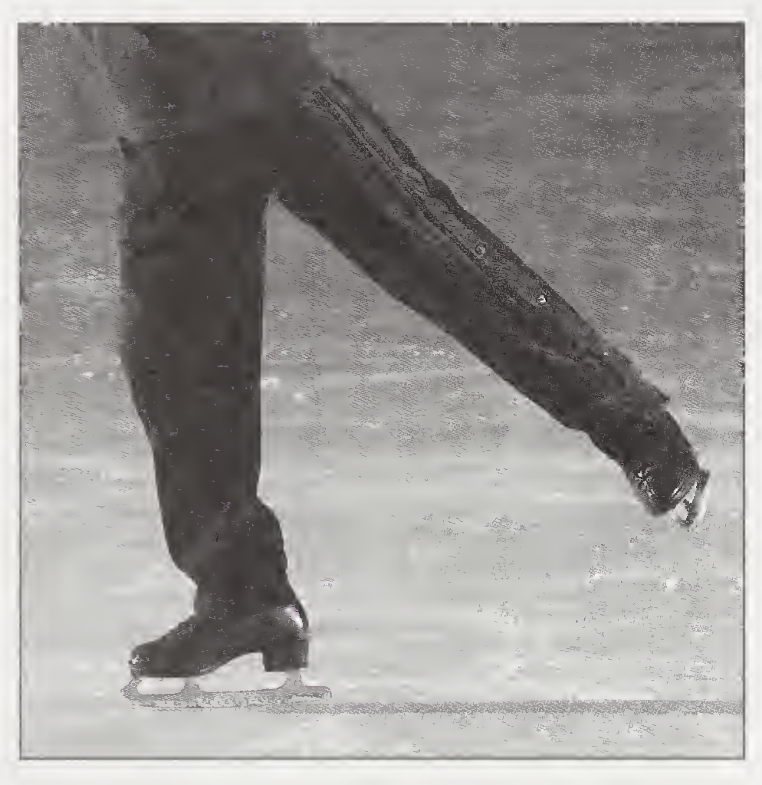
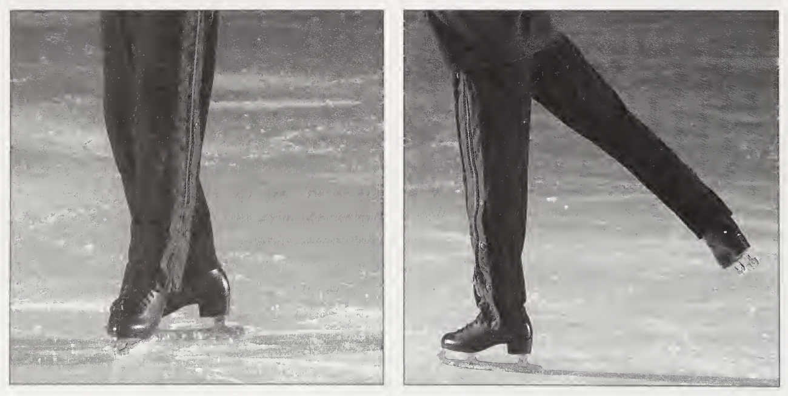
Right arm in front, left arm back; the right hip leads into the turn. Shoulders rotate in, then tighten to a checked position on the exit.
Free foot starts behind on the entry; its heel is brought to the instep of the skating foot; step down toward the ball of the foot — mind you don’t step on your own blade.
Outside edge before and after; land the new foot on a bent knee on the back outside edge, free foot held back over the tracing.
Tips
- Learn the step at the barrier first, right-to-left and left-to-right, then try it two-footed on the ice before one-footed.
Outside Closed Mohawk
Intermediate–AdvancedThe closed version on the outside edge: forward outside → back outside, instep-to-heel placement, free foot finishing forward.
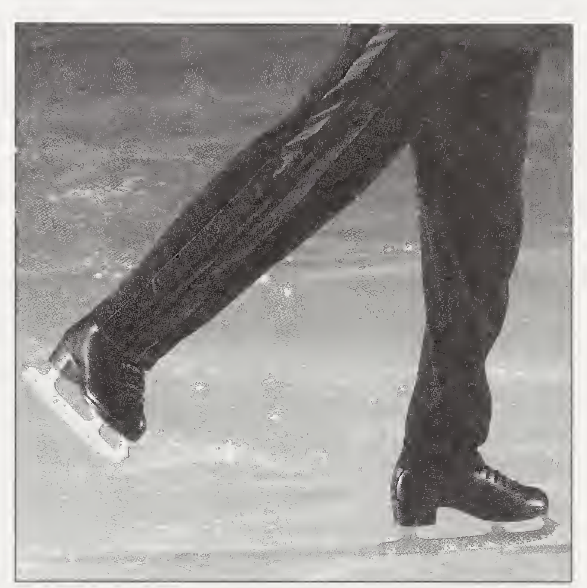
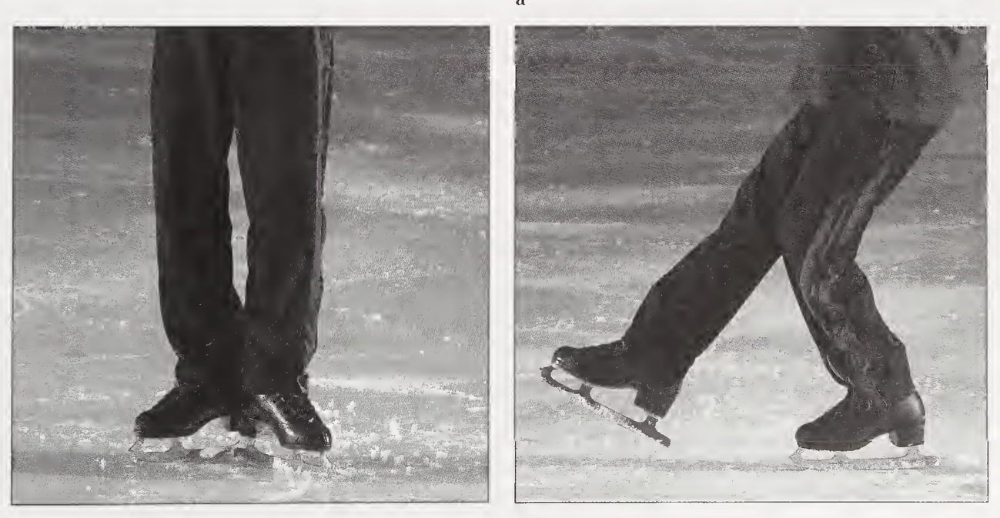
Follows the open Mohawk’s procedure exactly, except the finish — closed hip, free foot carried forward on the finished edge.
Instep of the free foot to the heel of the skating foot; the old skating foot continues forward after the step.
Outside edge throughout.
Tips — the rest of the Mohawk family
- Back Mohawk: the simple step from a back edge to the same edge forward, with no change of circle (if the edge or circle changes, it’s a Choctaw).
- Drop Mohawk: brings the feet together right after the turn, making three steps of it — it appears in the eight-step Mohawk.
- Swing Mohawk: swings the free foot past the skating foot before placing it.
Choctaws
AdvancedThe step turn that changes everything: feet, direction, and edge (e.g. right forward outside → left back inside). The free foot is placed to the heel of the skating foot, the weight rocks to the ball of the foot, and the hips twist through the change of circle.
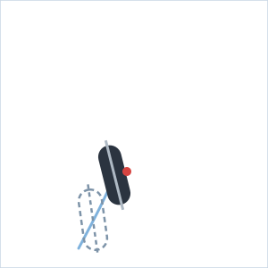
1 · Entry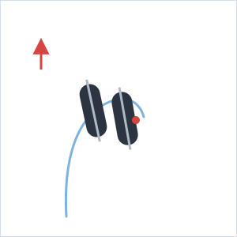
2 · The turn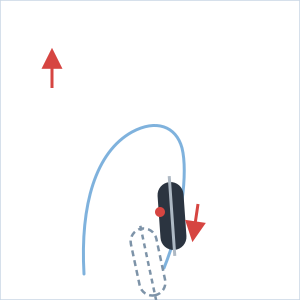
3 · Exit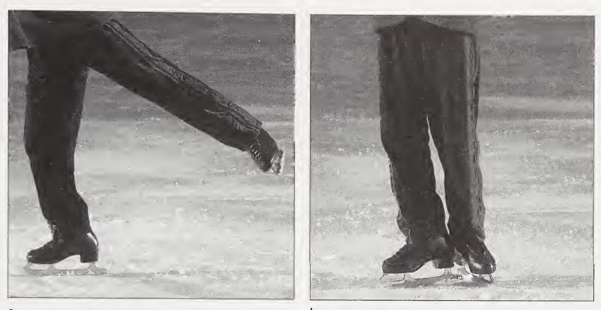
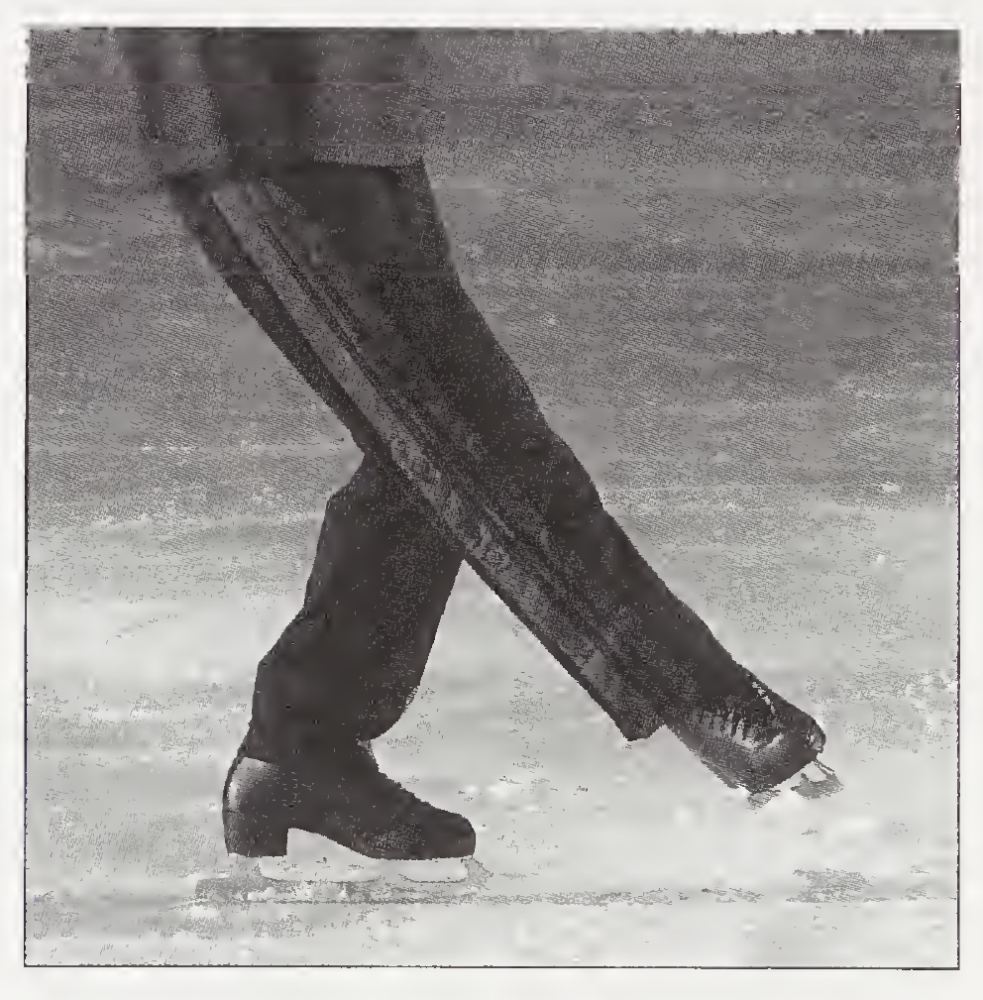
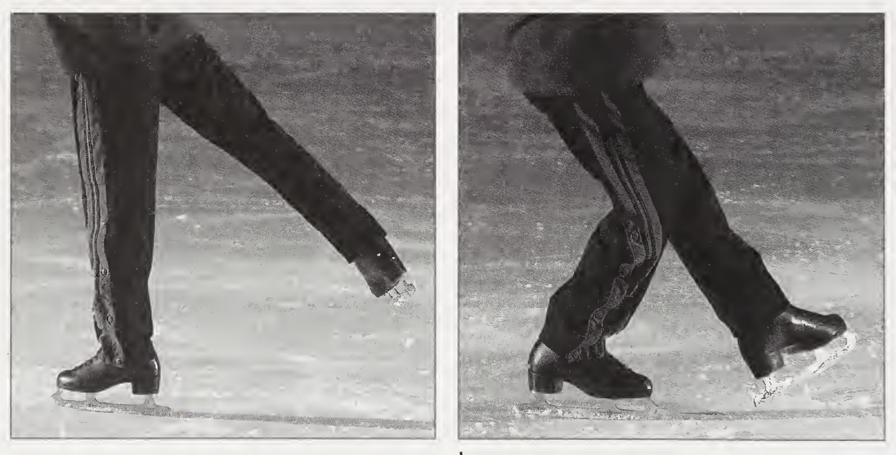
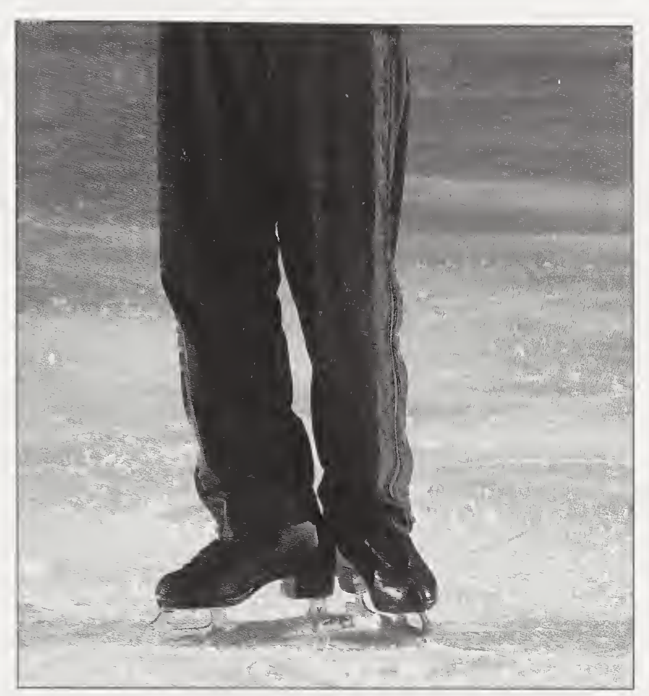
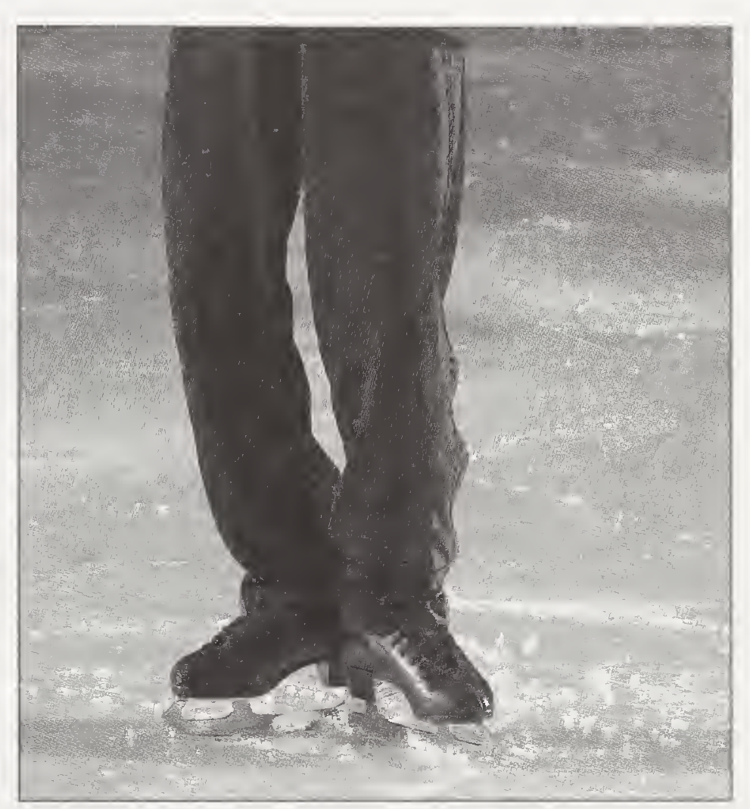
Slight push as you turn; the hips do the twisting. On the inside Choctaw (left forward inside → right back outside, the one in the Blues) the shoulders start checking before the free foot is placed.
Open Choctaw — free foot placed at the toe of the skating foot; the new free foot finishes behind, hip checked back (the Kilian position). Closed Choctaw — free foot placed at the heel; the new free foot extends forward, hip pressed forward (Blues, Rocker Foxtrot).
The edge flips: outside → inside or inside → outside, and you leave on a new circle.
Tips
- Practise both feet (in dance, the right-foot Choctaw appears in the man’s Tango Romantica step). Learn it at the barrier first.
- A junior Choctaw is the same step placed wide; a swing Choctaw swings the free foot past before placing (Quickstep); a back Choctaw goes from a back edge to the opposite edge forward — if the circle doesn’t change, it’s only a back Mohawk.
Brackets
AdvancedThe three turn’s opposite twin. One foot, changes edge and direction like a three — but where a three rotates into the circle, a bracket turns outside it. The rotation is exactly reversed, and the print’s cusp points away from the circle’s centre.
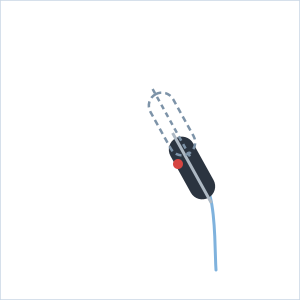
1 · Entry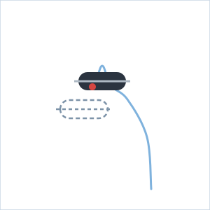
2 · The turn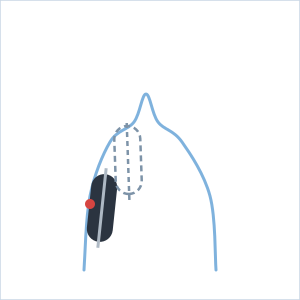
3 · Exit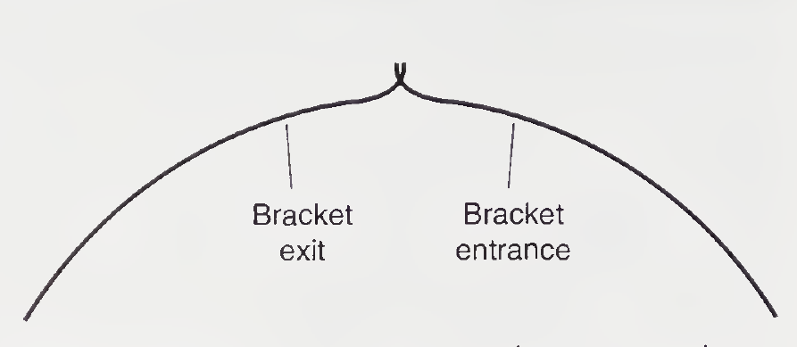
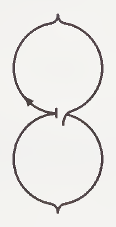
Rotate the upper body tightly outside the circle — one arm pulled across in front, the other countering behind, torso pressing against the arms. Check at the apex. Your head keeps looking in the direction of travel the whole time.
Forward inside bracket: free foot starts in front, lifts slightly to help the turn, then settles back to the heel of the skating foot on exit. Forward outside bracket: free foot starts at the heel, behind.
Weight starts back of centre and rocks forward to just behind the bottom pick as the knee straightens — the heel lifts and swings the blade from a forward edge to the opposite back edge. Back brackets rock the other way, lifting the front of the blade.
Tips
- Practise the turn and the free-foot action at the barrier, then two-footed on a circle.
- The advanced back bracket adds a scissor: the free foot swings forward as the skating foot moves back, for depth and counter.
Counters
AdvancedOne foot, and the edge never changes: forward inside → back inside, forward outside → back outside. Like a change of edge with a turn in the middle — except the turn faces into the new circle, taking you off your original circle entirely.
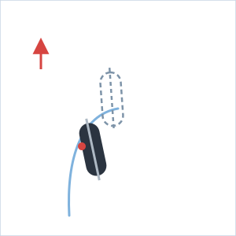
1 · Entry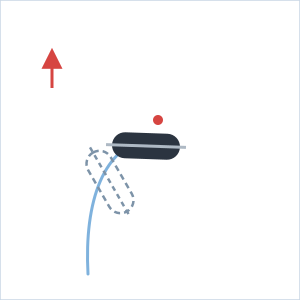
2 · The turn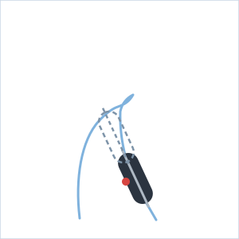
3 · Exit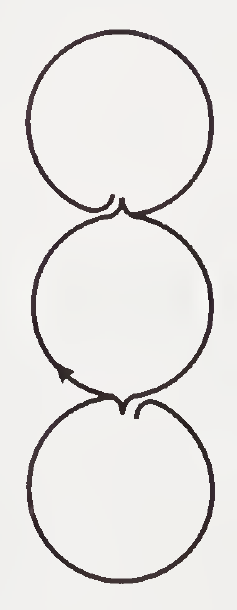
Bracket-style mechanics: rotate outside the original circle, upper body tight, arms countering, check at the apex, head looking ahead into the new circle.
The free foot scissors — front to back on forward counters, finishing trailing over the new print. On back counters it kicks into the circle (the new one for back inside, the original for back outside) and returns to the heel.
Same edge start to finish. Weight rocks back-of-centre → just behind the bottom pick (forward counters) as the knee straightens, so the heel lifts and rotates through without scraping.
Tips
- Barrier first, then two feet on a circle.
- If you find you’ve changed edge, you’ve skated a bracket or a three — a counter keeps its edge at all costs.
Rockers
AdvancedThe counter’s mirror image. Same edges in and out, same change of circle — but the turn in the middle faces into the original circle, rotating into the curve like a three turn instead of against it.
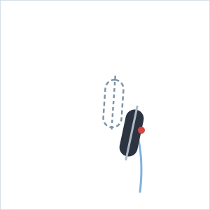
1 · Entry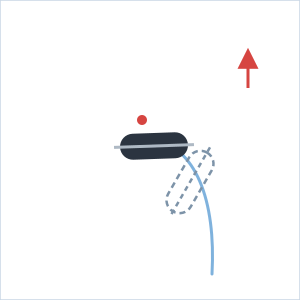
2 · The turn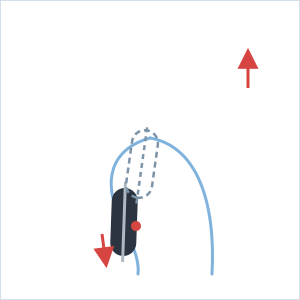
3 · Exit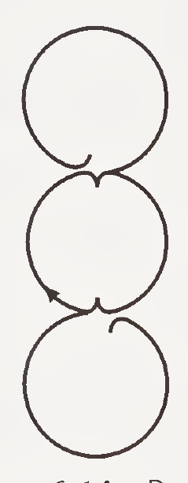
Rotate into the circle, upper body tight at the shoulder of the turn, arms countering against the hips at the apex to hold the check. Head turns to look into the new circle.
The free foot scissors — front to back for forward rockers, back to front for back rockers — and returns over the print at the exit, to the heel of the skating foot.
Same edge throughout (forward inside → back inside; forward outside → back outside). Weight rocks along the blade exactly as in the counter — forward rockers toward the front of the blade, back rockers toward the back, so the free end lifts and swings through.
Tips
- Counter or rocker? Ask one question: which circle does the turn face? Into the new circle = counter; into the original circle = rocker. Everything else about the pair is nearly identical.
Footwork
All levelsTurns plus freestyle moves, combined — “the glue that holds a program together.” A step sequence is built in one of three patterns, and judges read the rulebook words literally: bold, at least, full, complete, must, not less.
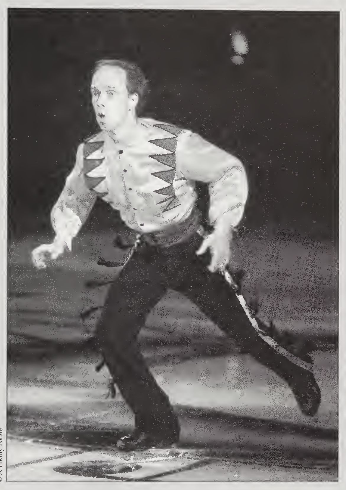
End to end of the rink, down the full long axis or corner to corner.
One complete circle or oval using the full width of the ice.
End to end in at least two bold curves, each no less than half the rink’s width. (Spiral sequences follow the same pattern rules.)
What makes it good
- Carriage and style; speed and flow; quick, sure, deep, clean edges; rhythm and timing with the music; changes of rotational direction; highs and lows.
- A variety of complex turns — threes, Mohawks, Choctaws, brackets, counters, rockers — linked with spirals, lunges, half jumps, and creative steps.
Master the Move — Scott Hamilton’s lesson
- Creativity, expression, and personality count alongside strong edges — movements in both directions, surprise elements, clean quick sure edges, and skating to the music, not just on it. Character is what separates doing the steps from performing them.
All seven turns at a glance
| Turn | Feet | Changes edge? | Changes feet? | Rotation | Print clue |
|---|---|---|---|---|---|
| Three turn | One | Yes | No | Into the circle | A “3”, cusp pointing in |
| Double three | One | Yes, twice | No | Into the circle, twice | Two linked 3s — thirds of a circle, like a Y |
| Mohawk | Two (a step) | No | Yes | — | One smooth arc, no cusp |
| Choctaw | Two (a step) | Yes | Yes | Hips twist | Steps onto a new circle |
| Bracket | One | Yes | No | Outside the circle | Cusp pointing out |
| Counter | One | No | No | Outside the original circle | Turn faces the new circle |
| Rocker | One | No | No | Into the original circle | Turn faces the original circle |